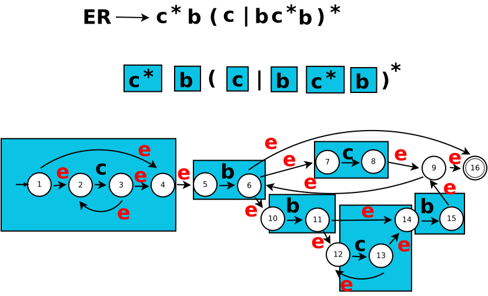
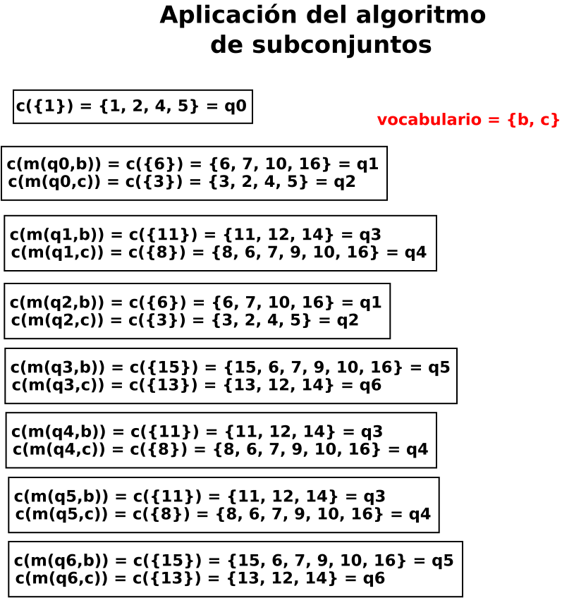
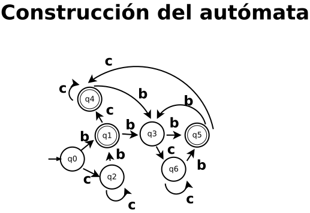
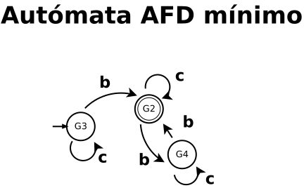

Objetivo
Se crearan las clases, para el AFN y para el AFD.
Actividades
Se tiene la expresión regular c* b (c | bc* b)*. Usar el siguiente código para programar los tokens que acepta el AFD.
Programa AFD. Para ejecutar este programa se hace con la linea de comando: java DriverAFD cadena de entrada
Pizarrón, archivo dia: SNCompiladores/Pra1prog1.dia

Pizarrón, archivo dia: SNCompiladores/Pra1prog1a.dia

Pizarrón, archivo dia: SNCompiladores/Pra1prog1b.dia

Aplicación del algoritmo de minimización. Se forman dos grupos. Grupo de estados no finales G1 = {q0, q2, q3, q6} y el grupo de estados finales G2 = {q1, q4, q5}:
| G1 | b | c |
|---|---|---|
| q0 | q1 | q2 |
| q2 | q1 | q2 |
| q3 | q5 | q6 |
| q6 | q5 | q6 |
| G2 | b | c |
|---|---|---|
| q1 | q3 | q4 |
| q4 | q3 | q4 |
| q5 | q3 | q4 |
Se forman grupos consistentes, como: G3 = {q0, q2}, G4 = {q3, q6} y G2 es consistente. Por lo que el autómata queda de la siguiente forma.
Pizarrón, archivo dia: SNCompiladores/Pra1prog1c.dia

| Tabla δ | b | c |
|---|---|---|
| G3 | G2 | G3 |
| G2 | G4 | G2 |
| G4 | G2 | G4 |
Se puede usar la siguiente tabla de transiciones:
| Tabla δ 1 | b | c |
|---|---|---|
| 0 | 1 | 0 |
| 1 | 2 | 1 |
| 2 | 1 | 2 |
La tabla de transiciones que se usa es "Tabla δ 1" para hacer el programa.
import java.util.*;
public class DriverAFD {
public static void main(String[] args) {
ArgumentosToken tm = new ArgumentosToken(args);
AFD m = new AFD(tm);
m.activarAFD();
}
}
class ArgumentosToken {
private int indice;
String entrada;
public ArgumentosToken(String[] args) {
if(args.length > 0)
entrada = args[0];
else
entrada = "";
indice = 0;
System.out.println("entrada = " + entrada);
}
public char getSiguienteToken() {
if(indice < entrada.length())
return entrada.charAt(indice++);
else
return '$';
}
}
class AFD {
ArgumentosToken tm;
private char tokenActual;
public AFD(ArgumentosToken tm) {
this.tm = tm;
}
public void avanzar() {
tokenActual = tm.getSiguienteToken();
}
public void activarAFD() {
int estadoActual = 0;
avanzar();
while(tokenActual != '$') {
switch(estadoActual) {
case 0:
if(tokenActual == 'b') estadoActual = 1;
else if(tokenActual == 'c') estadoActual = 0;
break;
case 1:
if(tokenActual == 'b') estadoActual = 2;
else if(tokenActual == 'c') estadoActual = 1;
break;
case 2:
if(tokenActual == 'b') estadoActual = 1;
else if(tokenActual == 'c') estadoActual = 2;
break;
}
avanzar();
}
if(estadoActual == 1)
System.out.println("Acep");
else
System.out.println("rechazado");
}
}
Cuestionario
Pregunta 1. Realizar todo el proceso de transformación de la expresión regular hasta la tabla de transiciones del AFD. De tal manera que se compruebe el programa DriverAFD.
Pregunta 2. Obtener el programa para reconocer las palabras que acepta la siguiente expresión regular (b|c)(b|c)..
Pregunta 3. Obtener el programa para reconocer las palabras que acepta la siguiente expresión regular (b|c)(b|cc*)..
Pregunta 4. Obtener el programa para reconocer las palabras clave if, else y return.